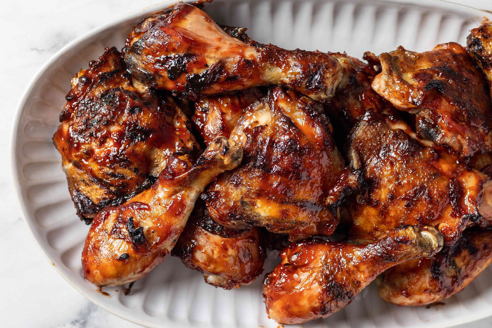

Chicken Paprikash

Description
This Eastern European chicken dish is swimming in a savory sauce that should be served with a side of pierogi. "My husband is Hungarian so he grew up on chicken paprikash," says user Suzanne. "I made this recipe to surprise him and it was even better than his mom's!"
Ingredients
- 3 eggs, beaten
- 1 cup water
- 2 teaspoons salt
- 1/4 cup butter
Instructions
- Fill a large pot with water and bring to a boil over high heat. In a large bowl, mix together the eggs, 2 teaspoons of salt, and 1/2 cup of water. Gradually stir in 2 1/2 cups of flour to make a stiff batter. Using two spoons, scoop out some batter with one spoon and use the second to scrap off the spoonful of batter into the boiling water. Repeat until several dumplings are cooking. Cook dumplings for 10 minutes or until they float to the top; then lift from the water and drain in a colander or sieve. Rinse with warm water.
- In a large skillet over medium-high heat, melt butter and add chicken; cook until lightly browned, turning once. Add onion to skillet and cook 5 to 8 minutes more. Pour in 1 1/2 cups of water, and season with paprika, salt, and pepper; cook 10 minutes more, or until chicken is cooked through and juices run clear. Remove chicken from skillet and keep warm.
- Stir 2 tablespoons of flour into sour cream; then slowly stir into the onion mixture remaining in the skillet. Bring the mixture to a boil, stirring constantly, and cook until thickened.
Back to main page